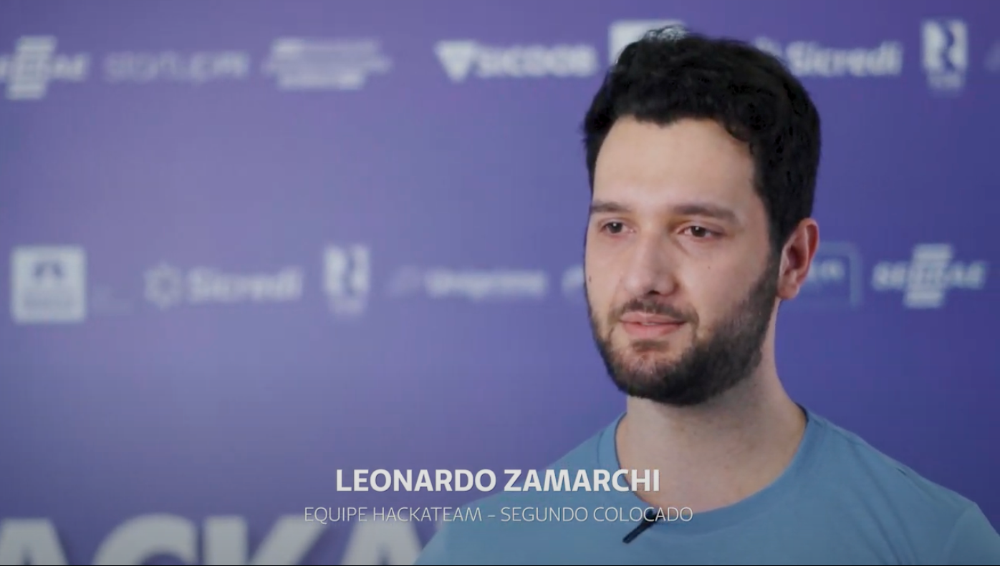

Sobre
Portfólio
Conquistas
Contatos
Conquistas
Desafios
WYCUP - Myseelf, dispositivo de acessibilidade para deficientes visuais
Sistema de monitoramento e prevenção a casos crônicos (Hackathon Open Now)
